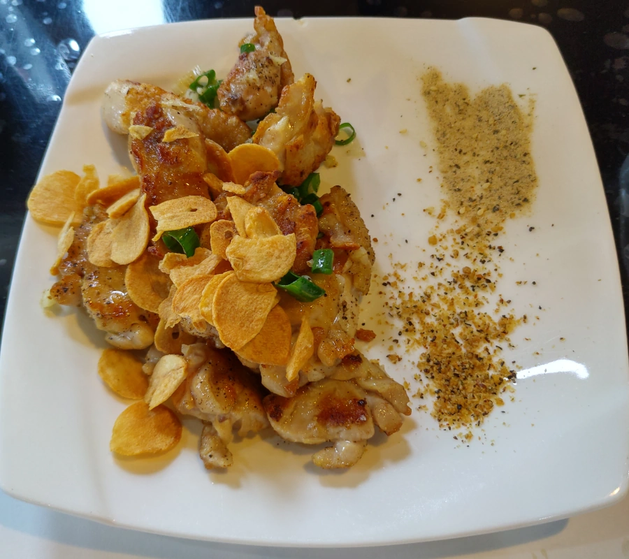

[新竹] 登野精緻鐵板料理
| 餐廳名稱: | 登野精緻鐵板料理 |
|---|---|
| 地 址: | 新竹市關新ㄧ街52號 |
| 營業時間: | 週日～週六 11:30 - 14:00 17:00 - 21:00 每日營業 |
| 電 話: | 03 666 8070 |
從網路上知道 登野精緻鐵板料理 很久了， 蠻多好評的。今天覓食時翻到了，發現仍然陸陸續續有好評，就決定是它了。
登野的地點很好，隔壁就是私人停車場，停車方便。但也是要早點來，我們吃完離開時，停車場差不多滿了，畢竟附近還有其他餐廳。
立了一根招牌，很顯眼。
正門口。
我們三人被安排在小方桌，如果是一個人，應該就被安排到料理檯前吧。
服務流程蠻迅速的，菜單忘了拍，只好請各位去翻別人部落格了，官方粉絲頁也沒看到菜單。登野的菜單跟一般鐵板燒差不多。
第一道自然是生菜沙拉與蘑菇奶油濃湯，很正常好吃的味道。不過現在這個社會，能正常就不錯了，蠻多水準不夠或是奇怪創意的店。
炒青菜，今天是高麗菜，點菜時有詢問辣度，我們是選微辣吧。
今天我沒認真看菜單，快吃完時，料理台正在炒豆芽菜。本來以為還會有豆芽菜，但因為我們選了生菜沙拉，就沒有了。雖然我比較喜歡豆芽菜，但也不是超級愛，也就算了，下次注意看菜單囉。
炒花枝。適合沾椒鹽，不錯。
炒牛肉，傳統黑胡椒洋蔥醬汁，正常好吃。
煎雞腿排，傳統蒜片作法，雞腿排外脆內嫩，正常好吃。 
單點的 煎豆腐，我覺得還不錯吃。
煎鱈魚排，正常好吃。
單點的 起司蛋捲，我覺得這道菜不行，不習慣。
飯後甜點，不知道什麼時候弄的蜂蜜蛋糕，還不錯。
我自認為對鐵板燒要求不是很高，傳統黑胡椒醬下去，不大容易難吃。 可是無奈，近年來一堆奇怪的鐵板燒，有些中價位的口味奇怪，像是要求小辣結果吃起來像大辣，還有黑胡椒醬調味奇怪，然後每道菜都是用那個奇怪黑胡椒醬去炒。 高價位的通常能吃，但無法常吃。
登野精緻鐵板料理 今天吃完感覺滿意， 這是一家味道傳統、正常，價格合理的鐵板燒，，停車也方便。可以常去。會再回訪。